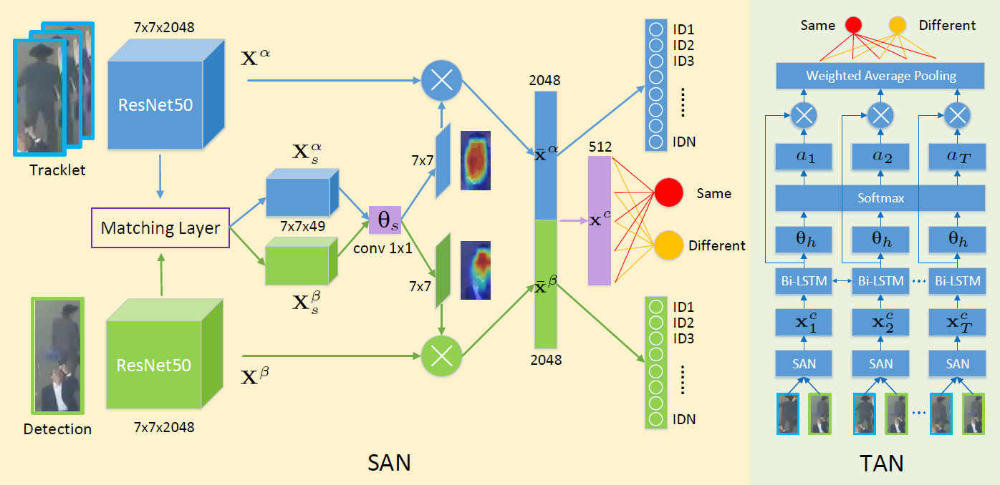

Online Multi-Object Tracking with Dual Matching Attention NetworksJi Zhu1,2 Hua Yang1 Nian Liu3 Minyoung Kim4 Wenjun Zhang1 Ming-Hsuan Yang5,61 Shanghai Jiao Tong University 2 Visbody Inc 3 Northwestern Polytechnical University 4 Massachusetts Institute of Technology 5 University of California, Merced 6 Google Inc |
|  |
Abstract
In this paper, we propose an online Multi-Object Tracking (MOT) approach which integrates the merits of single object tracking and data association methods in a uni ed framework to handle noisy detections and frequent interactions between targets. Speci cally, for applying single object tracking in MOT, we introduce a cost-sensitive tracking loss based on the state-of-the-art visual tracker, which encourages the model to focus on hard negative distractors during online learning. For data association, we propose Dual Matching Attention Networks (DMAN) with both spatial and temporal attention mechanisms. The spatial attention module generates dual attention maps which enable the network to focus on the matching patterns of the input image pair, while the temporal attention module adaptively allocates different levels of attention to dfferent samples in the tracklet to suppress noisy observations. Experimental results on the MOT benchmark datasets show that the proposed algorithm performs favorably against both online and offline trackers in terms of identity-preserving metrics.
Downloads
| [DMAN.pdf] | : The paper. |
| [Poster.pdf] | : The poster. |
| [Code:jizhu1023/DMAN_MOT] | : Available on Github. |
BibTex (DOI)